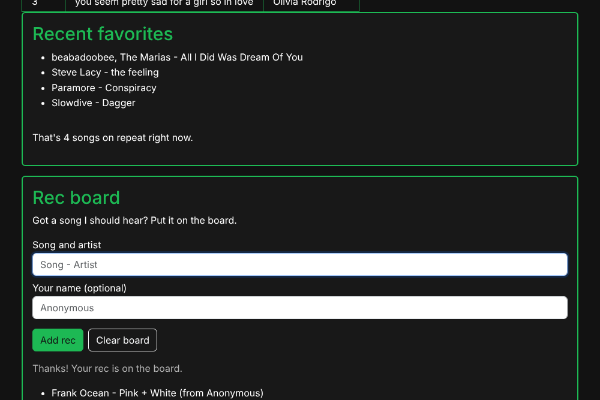

Music Hub
My personal music site with my bio, top albums, a favorites list, and a Rec board where visitors add songs. I built it page by page all semester with HTML, CSS, Bootstrap, and JavaScript, and I wrote the Rec board with AI help and tested it.
Open the Music Hub